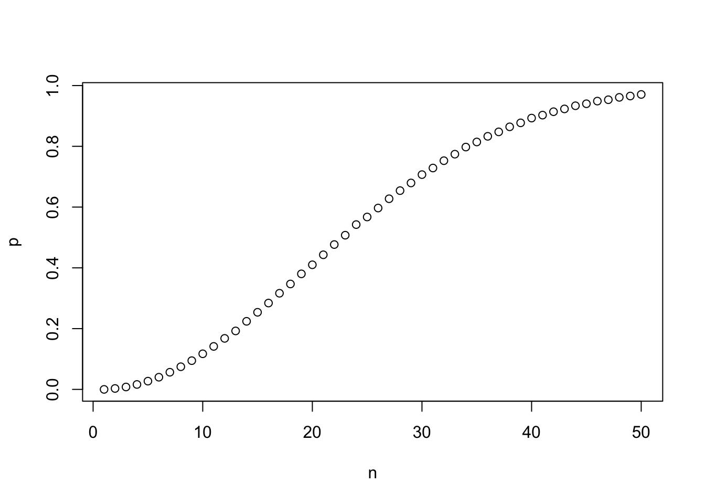
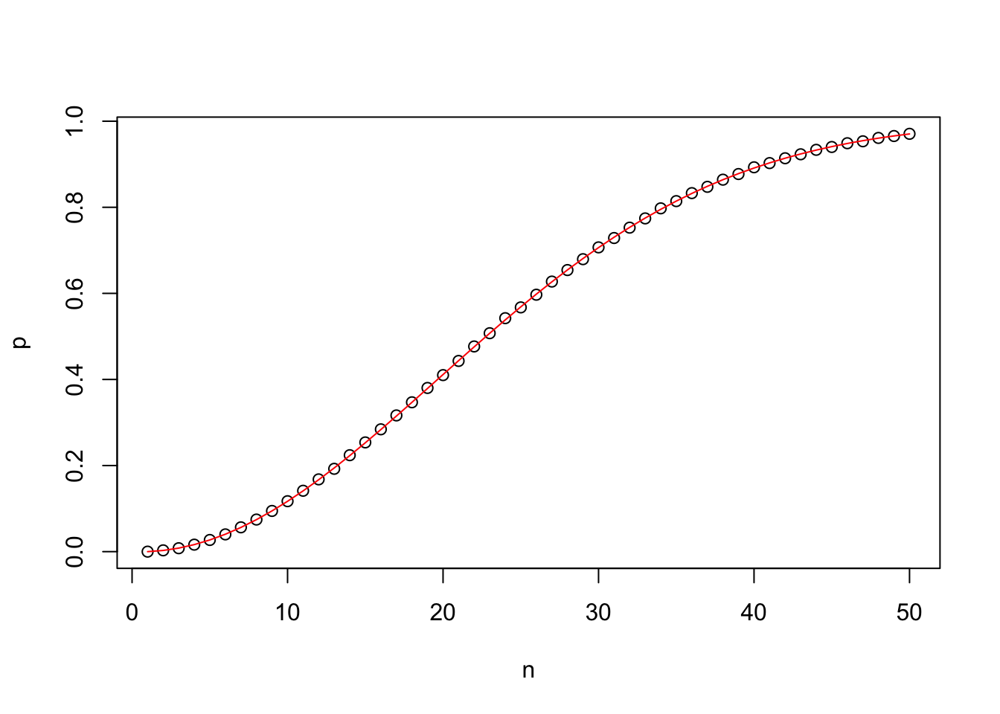
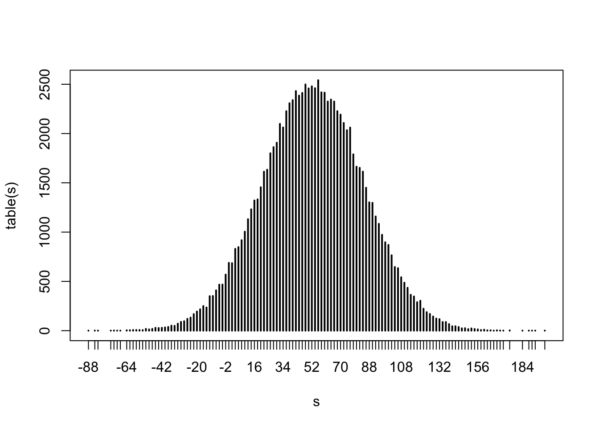
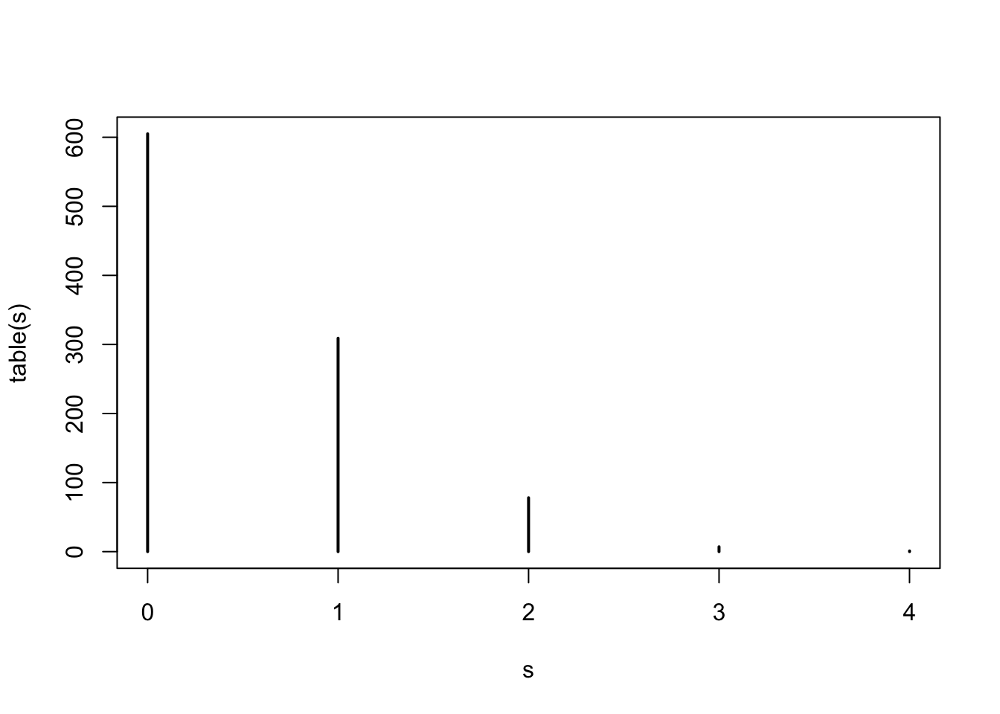
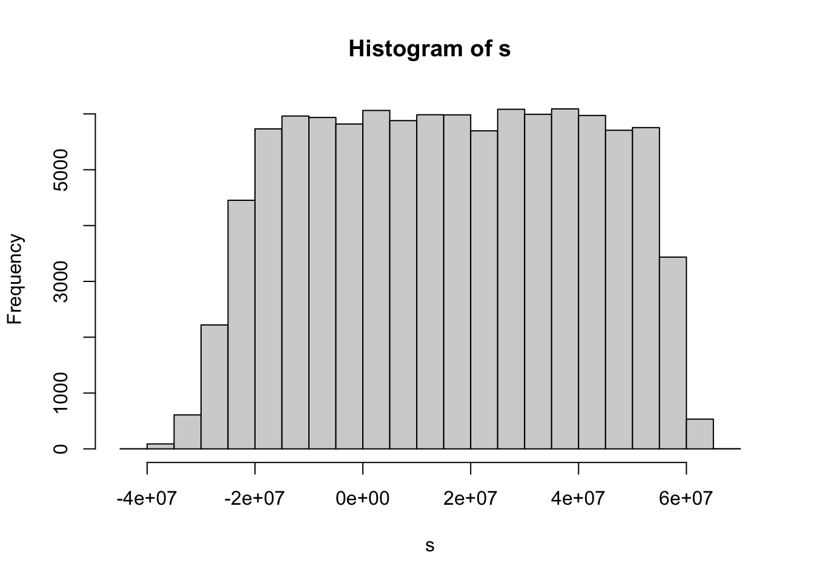
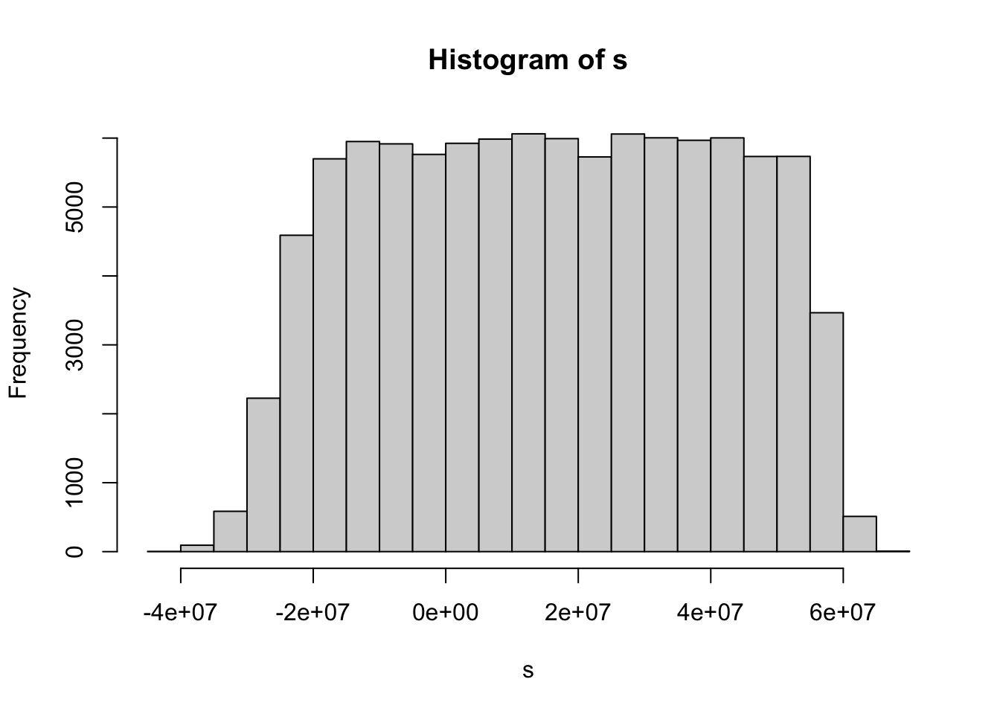

set.seed(2023-10-1)
n <- 25
bdays <- sample(1:365, size = n, replace = TRUE)17 Probability
We will use code to answer the following probability questions:
What is the chance that two people in this room have the same birthday?
What is the chance that a casino loses money on 1,000 people betting on black?
How many people need to play to lower the chance of losing money to less than 1%?
What is the distribution of the number of people that win the lottery if the probability of winning is 1 in a million and 500,000 people by one tickets?
Why did banks underestimate their risk during the 2008 financial crisis.
17.1 Monte Carlo
Suppose we take a random sample of \(n\) people not born on Feb 29. What is the chance that two or more people have the same birthday?
We can figure this out with math, but lets use a Monte Carlo simulation instead.
The sample function take a random sample with or without replacement. So here is a randome sample of \(n = 25\), 365 days
Did two or more people have the same birthday?
any(duplicated(bdays))[1] FALSEThe probability can be thought of as taking \(n\) samples over and over again, for ever. The proportion of times we see two or more can be defined as the probability. So approximate \(\infty\) with 100,000 and report the proportion for \(n=25\).
n <- 25
B <- 10^5
replicate(B,{
bdays <- sample(1:365, size = n, replace = TRUE)
any(duplicated(bdays))
}) |> mean()[1] 0.56906Use Monte Carlo to estimate the probability for \(n=1,\dots,50\). Make a plot of the probability versus \(n\).
n <- seq(1, 50)
pr <- function(n){
replicate(B,{
bdays <- sample(1:365, size = n, replace = TRUE)
any(duplicated(bdays))
}) |> mean()
}
p <- sapply(n, pr)
plot(n, p)
We can compute the exact probability:
\[ 1 - 1 \times \frac{364}{365}\times\frac{363}{365} \dots \frac{365-n + 1}{365} \]
Write a function that computes this for any \(n\) then add a curve to the previous plot to confirm that our approximation worked.
epr <- function(n){
1 - prod(seq(365, 365 - n + 1)/365)
}
ep <- sapply(n, epr)
plot(n, p)
lines(n, ep, col = "red")
17.2 Random variables
What is the chance that a casino loses money on 1,000 people betting on black? Let’s play once:
x <- sample(c(-1, 1), size = 1, prob = c(9/19, 10/19))If we play 10 times we get different values:
replicate(10, sample(c(-1, 1), size = 1, prob = c(9/19, 10/19))) [1] 1 1 -1 1 -1 1 -1 -1 1 1
Note
We can get the same results using
sample(c(-1, 1), size = 10, replace = TRUE, prob = c(9/19, 10/19)) [1] 1 1 -1 -1 1 -1 1 1 1 -1even faster is to use
x <- rbinom(10, 1, 10/19); x <- x*2 - 1These are the outcomes of a random variable \(X\) with
\[ \mbox{Pr}(X = 1) = 10/19 \mbox{ and } \mbox{Pr}(X=-1) = 9/19 \]
We are interested in the sum of \(n\) realizations of this random variable: \[ S_n = \sum_{i=1}^{n} X_i \]
And want to know
\[ \mbox{Pr}(S_n<0) \]
Here is one realization of \(S_n\) with \(n=1000\):
x <- sample(c(-1, 1), size = 1000, replace = TRUE, prob = c(9/19, 10/19))
s <- sum(x)We can use math to compute the probability above, but we will instead use a Monte Carlo simulation. This can be useful for checking our math and aslo for cases when we can’t do the math.
17.2.1 Monte Carlo
We can see the distribution of \(S\) by randomly generating it an infinite number of times. Let’s approximate with 100,000 and look at the distribution of \(S\)
s <- replicate(10^5,{
x <- sample(c(-1, 1), size = 1000, replace = TRUE, prob = c(9/19, 10/19))
sum(x)
})
plot(table(s))
We can use this compute the probability of interest:
mean(s < 0)[1] 0.0453517.3 CLT
Do you recognize the distribution of \(S_n\) shown above?
In your Probability class you learn about the Central Limit Theorem: the distribution of the sum of independent equally distributed random variables can be approximated with a normally distribution.
But for this to be useful, we need to know the mean \(\mbox{E}[S_n]\) and standard error \(\mbox{SE}[S_n]\)
Once we know this we can estimate the probability of \(S_n\) being in an interval, for any interval \((a,b)\):
\[ \mbox{Pr}(a<S_n<b) = \mbox{Pr}\left(\frac{a-\mbox{E}[S_n]}{\mbox{SE}[S_n]} < Z < \frac{b-\mbox{E}[S_n]}{\mbox{SE}[S_n]}\right) \] with
\[ Z = \frac{S_n-\mbox{E}[S_n]}{\mbox{SE}[S_n]} \]
an standard normal random variable.
So all we need is \(\mbox{E}[S_n]\) and \(\mbox{SE}[S_n]\). This is usually easier to compute than the actual distribution of \(S_n\)
What is the expected value of \(X_i\)? Call it \(\mu\).
\[ \mu = \mbox{E}[X_i] = -1 \times 9/19 + 1 \times 10/19 = 1/19 \approx 0.05 \]
What is the standard error? Call it \(\sigma\)
\[ \begin{align} \sigma^2 &= \mbox{Var}[X_i] = \mbox{E}[(X_i-\mu)^2] = (-1 - 1/19)^2 \times 9/19 + (1 - 1/19)^2 \times 10/19\\ & = 4 \times 10/19 \times 9/19 \end{align} \] Let’s check with a Monte Carlo simulation:
x <- sample(c(-1, 1), size = 10^6, replace = TRUE, prob = c(9/19, 10/19))
mean(x)[1] 0.05299sqrt(mean((x - mean(x))^2))[1] 0.998595sd(x)[1] 0.9985955
Note
The sd function in R does not compute the standard error or population standard deviation. It returns an estimate of the population standard deviation based on s sample. It divides by \(n-1\) instead of \(n\). Here there practically no difference as \(n\) is 1 million.
This let’s us compute:
\[ \mbox{E}[S_n] = \mbox{E}\left[\sum_{i=1}^n X_i\right] = \sum_{i=1}^n \mbox{E}[X_i] = n \mu \]
\[ \mbox{Var}[S_n] =\mbox{Var}[\sum_{i=1}^n X_i] = \sum_{i=1}^n\mbox{Var}[X_i] = n \sigma^2 \]
So
\[ \mbox{SE}[S] = \sqrt{n} \sigma \]
So \[ \mbox{Pr}(S_n < 0) = \mbox{Pr}\left(Z < \frac{-n\mu}{\sqrt{n}\sigma}\right) = \mbox{Pr}\left(Z < \frac{-\sqrt{n}\mu}{\sigma}\right) \]
n <- 1000
mu <- 1/19
sigma <- 2*sqrt(9/19*10/19)
pnorm(-sqrt(n)*mu/sigma)[1] 0.04779035Now to answer “How many people need to play to lower the chance of losing money to less than 1%?” we want:
\[ \mbox{Pr}\left(Z < \frac{-\sqrt{n}\mu}{\sigma}\right) \]
Notice that the the quantity \(\frac{-\sqrt{n}\mu}{\sigma}\) goes to \(-\infty\) as \(n\) gets larger so we can make \(\mbox{Pr}(S_n<0)\) as small as we desire by simply making the \(n\) larger.
We again can use CLT
\[ \mbox{Pr}\left(Z<\frac{-\sqrt{n}\mu}{\sigma} \right) \leq 0.01 \implies \frac{-\sqrt{n}\mu}{\sigma} = \Phi^{-1}(0.01)\implies \sqrt{n} = -\frac{\sigma}{\mu}{\Phi^{-1}(0.01)} \]
n <- ceiling((-sigma/mu*qnorm(0.01))^2)17.4 Exercises
- Check that you selected the correct \(n\) with Monte Carlo simulation.
## Hint: copy and paste one of the previous Monte Carlo simulations and change n
s <- replicate(10^5,{
x <- sample(c(-1, 1), size = n, replace = TRUE, prob = c(9/19, 10/19))
sum(x)
})
mean(s < 0)[1] 0.00999- Suppose instead of the sum we are interested in the average:
\[ \bar{X}_n = S_n / n \]
- What are the expected value of \(\bar{X}\)?
\[ \mbox{E}[\bar{X}_n] = \mbox{E}[\bar{S}_n/n] = 1/n \mbox{E}[\bar{S}_n] = 1/n \times n \times \mu = \mu \]
- What is the standard error of \(\bar{X}_n\)?
\[ \mbox{SE}[\bar{X}_n] = 1/n \mbox{SE}[\bar{S}_n] = 1/n \times \sqrt{n} \sigma = \sigma / \sqrt{n} \]
- What do the previous two results tell us about the difference between \(\bar{X}_n\) and \(\mu\) when \(n\) is very large.
17.5 Law of small numbers
What is the distribution of the number of people that win the lottery if the probability of winning is 1 in a million and 500,000 people by one tickets?
If we define \(X_i\) as 1 if person \(i\)’s ticket won and 0 otherwise, then the number of people that win is the sum
\[ S_n = \sum_{i=1}^n X_i \]
with \(n=500,000\) and
\[ \mbox{Pr}(X_i=1) = 0.000001 \].
CLT says \(S_n\) should follow a normal distribution. Let’s run Monte Carlo to check:
s <- replicate(10^3,{
x <- sample(c(0, 1), size = 5*10^5, replace = TRUE,
prob = c(1 - 10^-6, 10^-6))
sum(x)
})
plot(table(s))
Does that look normal?
What happened? The rule of thumb of \(n=30\) was well surpassed.
The problem here is that \(S_n\) can’t be negative, the expected value is \(n/10^{6}\), but the standard error is about \(\sqrt{n}/10^3\). So to even get a symmetric distribution we need \(\sqrt{n}/10^3\) at least twice as big as \(n/10^{6}\).
However, there is a distribution the does approximate the distribution of \(S_n\).
17.6 Exercise
- Compare the estimates of the probabilities
\[ \mbox{Pr}(S_n = k), k=0,1,2,3,4 \]
To the probabilities of a Poisson distributed variavbel with rate \(np = 500000/1000000 = 0.5\). Hint: Use dpois function.
sapply(0:3, function(k) mean(s == k))[1] 0.569 0.332 0.086 0.012dpois(0:3, 0.5)[1] 0.60653066 0.30326533 0.07581633 0.0126360617.7 2008 Financial Crisis
p <- 0.04 #default prob
s <- replicate(10^5,{
x <- sample(c(-200000, 10000), size = 10000, replace = TRUE, prob = c(p, 1-p))
sum(x)
})
hist(s)
p <- 0.04 #default prob
s <- replicate(10^5,{
p <- 0.04 + runif(1, -0.02, 0.02)
x <- sample(c(-200000, 10000), size = 10000, replace = TRUE, prob = c(p, 1 - p))
sum(x)
})
hist(s)
What assumption is violated now?
Remember the formula for sum of variance is actually:
\[ \mbox{Var}(X_1 + X_2) = \mbox{Var}(X_1) + \mbox{Var}(X_2) + 2\mbox{Cov}(X_1, X_2) \]
If variables are positively correlated, variance goes up.
17.8 Exercises
Use Monte Carlo simulations to answer these questions. Feel free to confirm using math.
- Two teams, say the Celtics and the Cavs, are playing a seven game series. The Cavs are a better team and have a 60% chance of winning each game. What is the probability that the Celtics win at least one game? Use a Monte Carlo simulation to compute (or confirm) your answer.
b <- 10^5
nowins <- replicate(b, {
x <- sample(c(0, 1), size = 4, replace = TRUE, prob = c(0.6, 0.4))
sum(x) == 0
})
1 - mean(nowins)[1] 0.87002## using math
1 - 0.6^4[1] 0.8704Two teams, say the Cavs and the Warriors, are playing a seven game championship series. The first to win four games, therefore, wins the series. The teams are equally good so they each have a 50-50 chance of winning each game. If the Cavs lose the first game, what is the probability that they win the series?
Two teams, \(A\) and \(B\), are playing a seven game series. Team \(A\) is better than team \(B\) and has a \(p>0.5\) chance of winning each game. Write a function that uses Monte Carlo simulation to compute the probability of the underdog winning the series for any value \(p\). The plot the results for
p <- seq(0.5, 0.95, 0.025).Repeat the exercise above, but now keep the probability fixed at
p <- 0.75and compute the probability for different series lengths: best of 1 game, 3 games, 5 games,… Specifically,n <- seq(1, 25, 2).Assume the distribution of female heights is approximated by a normal distribution with a mean of 64 inches and a standard deviation of 3 inches. If we pick a female at random, what is the probability that she is between 61 and 67 inches?
Imagine the distribution of male adults is approximately normal with an expected value of 69 and a standard deviation of 3. How tall is the male in the 99th percentile? Hint: use
qnorm.The distribution of IQ scores is approximately normally distributed. The average is 100 and the standard deviation is 15. Suppose you want to know the distribution of the highest IQ across all graduating classes if 10,000 people are born each in your school district. Run a Monte Carlo simulation with
B=1000generating 10,000 IQ scores and keeping the highest. Make a histogram.In American Roulette you can also bet on green. There are 18 reds, 18 blacks and 2 greens (0 and 00). What are the chances the green comes out?
p <- 1/19- The payout for winning on green is $17 dollars. This means that if you bet a dollar and it lands on green, you get $17. Create a sampling model using sample to simulate the random variable \(X\) for your winnings.
sample(c(-1, 17), size = 1, replace = TRUE, prob = c(1-p, p))[1] -1- Compute the expected value of \(X\).
-1 * (1-p) + 17*p[1] -0.05263158- Compute the standard error of \(X\).
18 * sqrt(p * (1-p))[1] 4.019344- Now create a random variable \(S\) that is the sum of your winnings after betting on green 1000 times.
n <- 1000
x <- sample(c(-1, 17), size = n, replace = TRUE, prob = c(1-p, p))
sum(x)[1] -244- What is the expected value of \(S\)?
mu <- n * (-1 * (1-p) + 17*p)- What is the standard error of \(S\)?
se <- sqrt(n) * 18*sqrt(p*(1 - p))- Use CLT to estimate the probability that you end up winning money?
\[ Pr(Z > -\mu/se) = ? \]
1 - pnorm(-mu/se)[1] 0.3394053- Create a Monte Carlo simulation that generates 1,000 outcomes of \(S\). Compute the average and standard deviation of the resulting list to confirm the results of 6 and 7.
B <- 100000
s <- replicate(B,{
n <- 1000
x <- sample(c(-1, 17), size = n, replace = TRUE, prob = c(18/19, 1/19))
sum(x)
})
mean(s > 0)[1] 0.33563- Now check your answer based on CLT using the Monte Carlo result.